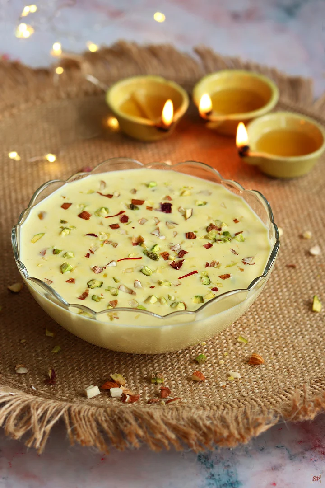

|  |
BasundiBasundi is a popular sweet dish from Gujarat made by boiling milk until it thickens, then sweetening it with sugar and flavoring it with cardamom, saffron, and nuts. It is creamy, rich, and often served chilled during festivals and special occasions. |
Shrikhand is a traditional Gujarati dessert made from thick strained yogurt (curd), sweetened with sugar and flavored with saffron and cardamom. It is creamy, rich, and often garnished with dry fruits. Served chilled, it is especially popular during festivals and summer.
Lapsi is a traditional Gujarati sweet made from broken wheat (daliya), ghee, and jaggery or sugar. It has a soft, grainy texture and a rich aroma. Lapsi is often prepared during festivals, pujas, and special occasions as a symbol of good luck and prosperity.